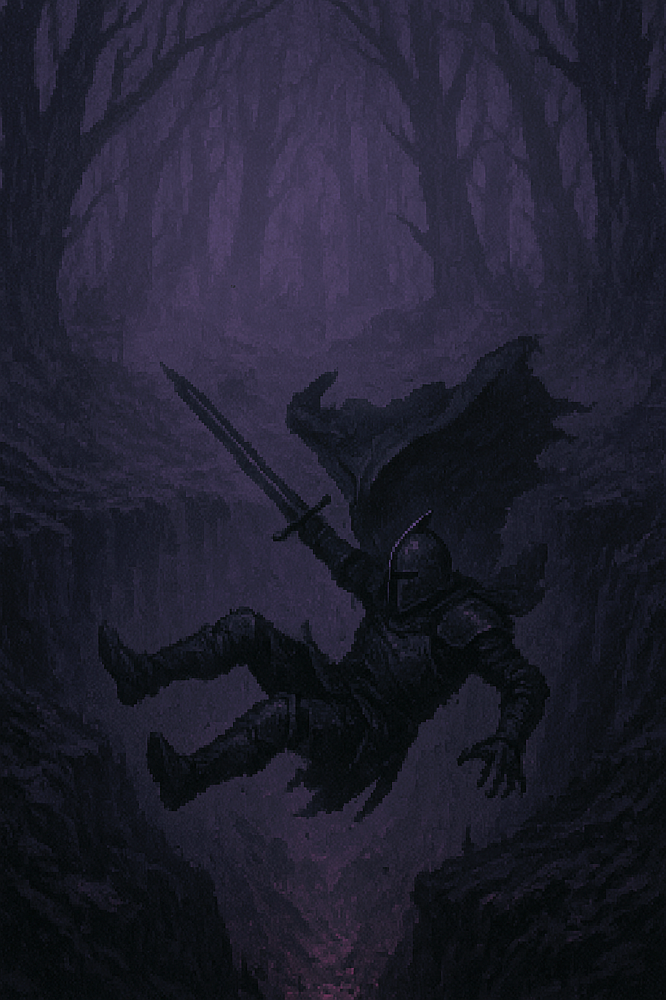

Le cœur d’Alaric s’emballe. Le courage cède à l’instinct. Il tourne les talons, s’élance à travers la brume de cendre, ignorant les racines, les ombres, et sa propre peur. Un craquement. Le sol s’effondre sous ses pas. Il chute dans une crevasse glaciale, les roches tranchantes déchirant son armure. Son cri se perd dans les profondeurs, étouffé par le vent et la honte. Ses doigts tâtonnent, cherchant appui, mais la pierre est trop lisse. Le dernier regard de Sir Alaric se perd vers la lueur grise du jour mourant. Et dans le Val d’Ombregivre, nul ne se souvient du chevalier noir… seulement du bruit de sa chute.